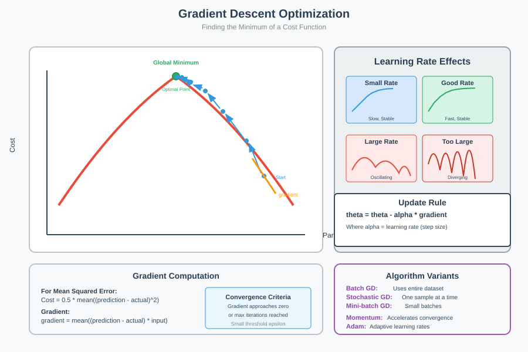
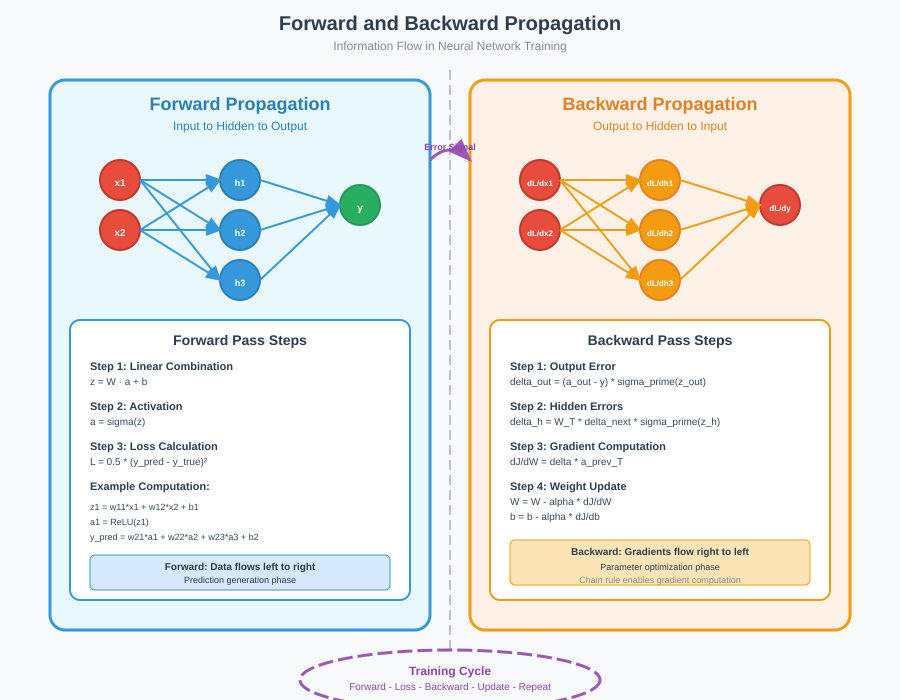
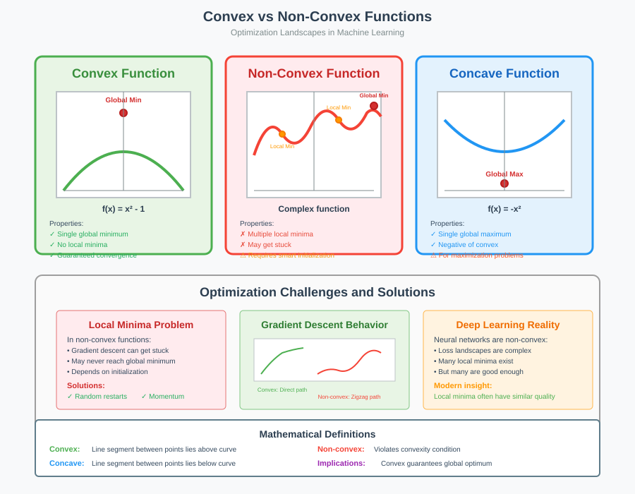

Neural Network Fundamentals
Quick Navigation 🧭
- 📊 Functions & Derivatives
- 🎯 Gradient Descent
- 🧠 Artificial Neural Networks
- ⚡ Forward Propagation
- 🔄 Backpropagation
- 📈 Cost Functions & Optimization
- 🔥 Activation Functions
- 📚 References & Further Reading
Functions & Derivatives
Understanding functions and derivatives is fundamental to grasping how neural networks learn and optimize their parameters through calculus-based methods.
Mathematical Functions
Definition: Functions define relationships between independent variables (x) and dependent variables (y), represented as:
y = f(x)
Where function f takes input value x and produces output y.
Common Examples:
- Linear function: f(x) = x
- Quadratic function: f(x) = x²
- Exponential function: f(x) = eˣ
Derivatives: Rate of Change
Derivative Definition: A derivative measures the instantaneous rate of change of function y = f(x) with respect to a small change in x.
Slope Formula:
Slope = Change in y / Change in x = Δy / Δx
Mathematical Process:
-
Step 1: Set up the difference quotient
Δy/Δx = [f(x + Δx) - f(x)] / Δx -
Step 2: Take the limit as Δx approaches zero
dy/dx = lim(Δx→0) [f(x + Δx) - f(x)] / Δx
Example Calculation:
For function f(x) = x²:
d(x²)/dx = 2x
This means the slope of x² at any point x equals 2x.

Applications in Neural Networks
Gradient Computation: Derivatives enable us to calculate how much the loss function changes with respect to each weight, forming the foundation of backpropagation algorithm.
Chain Rule: Essential for computing gradients through multiple layers of neural networks, allowing error signals to propagate backward through the network.
Gradient Descent
Gradient descent is the fundamental optimization algorithm that enables neural networks to learn by minimizing their loss functions through iterative parameter updates.
Algorithm Overview
Objective: Find optimal parameters θ (theta) that minimize the cost function J(θ).
Core Update Rule:
θ = θ - α * ∇J(θ)
Where:
- θ: Parameters (weights and biases)
- α: Learning rate (step size)
- ∇J(θ): Gradient of cost function with respect to parameters

Mathematical Foundation
Cost Function: For regression problems, typically Mean Squared Error:
J(θ₀, θ₁) = (1/2m) * Σ(yᵢ - ŷᵢ)²
Where:
- m: Number of training examples
- yᵢ: Actual output
- ŷᵢ: Predicted output
Gradient Calculation:
∂J/∂θⱼ = (1/m) * Σ(hθ(xᵢ) - yᵢ) * xᵢⱼ
Algorithm Variants
Batch Gradient Descent: Uses entire training set for each update - Advantages: Stable convergence, guaranteed global minimum for convex functions - Disadvantages: Computationally expensive for large datasets
Stochastic Gradient Descent (SGD): Updates parameters using single training example - Advantages: Fast updates, can escape local minima - Disadvantages: Noisy updates, may oscillate around minimum
Mini-batch Gradient Descent: Compromise between batch and SGD - Advantages: Balanced computational efficiency and stability - Disadvantages: Requires tuning of batch size hyperparameter
Artificial Neural Networks
Artificial Neural Networks (ANNs) are computational models inspired by biological neural networks, designed to learn complex patterns and relationships in data.
Biological Inspiration
Human Brain Analogy: The brain contains billions of interconnected neurons that process sensory inputs and generate responses. Similarly, ANNs consist of artificial neurons organized in layers to process information.
Network Architecture
Layer Types:
- Input Layer: Receives raw data features
- Hidden Layer(s): Process and transform information
- Output Layer: Produces final predictions
Fully Connected Networks: Each neuron in layer L connects to every neuron in layer L+1, enabling comprehensive information flow.

Mathematical Representation
Neuron Computation: For neuron j in layer l:
zⱼ⁽ˡ⁾ = Σ(wᵢⱼ⁽ˡ⁾ * aᵢ⁽ˡ⁻¹⁾) + bⱼ⁽ˡ⁾
aⱼ⁽ˡ⁾ = σ(zⱼ⁽ˡ⁾)
Where:
- wᵢⱼ⁽ˡ⁾: Weight from neuron i in layer (l-1) to neuron j in layer l
- bⱼ⁽ˡ⁾: Bias term for neuron j in layer l
- σ: Activation function
- aⱼ⁽ˡ⁾: Activation (output) of neuron j in layer l
Learning Process
Weight Initialization: Random initialization of weights and biases to break symmetry and enable learning.
Training Objective: Adjust weights and biases to minimize prediction error on training data while maintaining generalization to unseen data.
Forward Propagation
Forward propagation is the process by which neural networks make predictions by passing input data through the network layers to produce outputs.
Step-by-Step Process
Step 1: Input Processing
Data Flow: Input features x₁, x₂, ..., xₙ are fed into the input layer.
Weight Application: Each input is multiplied by its corresponding weight:
Linear Combination = Σ(wᵢ * xᵢ) + bias
Step 2: Activation Function Application
Nonlinearity Introduction: Apply activation function to linear combination:
Output = σ(Linear Combination)
Purpose: Activation functions introduce nonlinearity, enabling networks to learn complex patterns beyond simple linear relationships.
Multi-Layer Networks
Layer-by-Layer Computation: For networks with multiple hidden layers:
- Layer 1: Processes raw inputs
- Layer 2: Uses Layer 1 outputs as inputs
- Continue: Until reaching output layer
Mathematical Flow: For L-layer network:
a⁽⁰⁾ = X (input)
z⁽ˡ⁾ = W⁽ˡ⁾ * a⁽ˡ⁻¹⁾ + b⁽ˡ⁾
a⁽ˡ⁾ = σ(z⁽ˡ⁾)
For l = 1, 2, ..., L
Prediction Generation
Final Output: The output layer provides final predictions, which can be: - Regression: Continuous values - Binary Classification: Single probability - Multi-class Classification: Probability distribution over classes
Backpropagation
Backpropagation is the algorithm that enables neural networks to learn by computing gradients and updating parameters to minimize the loss function.
Algorithm Overview
Backward Error Propagation: Starting from the output layer, error signals propagate backward through the network, computing gradients for each parameter.
Weight Update Process: Use computed gradients to update weights and biases in the direction that reduces the loss.
Mathematical Foundation
Step 1: Compute Output Layer Error
Error Calculation: For output layer L:
δ⁽ᴸ⁾ = (a⁽ᴸ⁾ - y) ⊙ σ'(z⁽ᴸ⁾)
Where:
- y: True labels
- ⊙: Element-wise multiplication
- σ': Derivative of activation function
Step 2: Propagate Error Backward
Hidden Layer Errors: For layers l = L-1, L-2, ..., 1:
δ⁽ˡ⁾ = ((W⁽ˡ⁺¹⁾)ᵀ * δ⁽ˡ⁺¹⁾) ⊙ σ'(z⁽ˡ⁾)
Step 3: Compute Gradients
Parameter Gradients:
∂J/∂W⁽ˡ⁾ = δ⁽ˡ⁾ * (a⁽ˡ⁻¹⁾)ᵀ
∂J/∂b⁽ˡ⁾ = δ⁽ˡ⁾
Step 4: Update Parameters
Parameter Updates:
W⁽ˡ⁾ = W⁽ˡ⁾ - α * ∂J/∂W⁽ˡ⁾
b⁽ˡ⁾ = b⁽ˡ⁾ - α * ∂J/∂b⁽ˡ⁾
Chain Rule Application
Gradient Computation: Backpropagation efficiently applies the chain rule to compute how the loss function changes with respect to each parameter in the network.
Computational Efficiency: Single backward pass computes all gradients, making the algorithm computationally tractable for deep networks.
Cost Functions & Optimization
Understanding cost functions and optimization landscapes is crucial for training effective neural networks and avoiding common pitfalls.
Loss vs Cost Functions
Loss Function: Measures error for a single training example:
L(ŷᵢ, yᵢ) = (ŷᵢ - yᵢ)² (for regression)
Cost Function: Aggregates losses over entire training set:
J(θ) = (1/m) * Σ L(ŷᵢ, yᵢ)
Common Cost Functions
Mean Squared Error (Regression)
J(θ) = (1/2m) * Σ(hθ(xᵢ) - yᵢ)²
Cross-Entropy Loss (Classification)
Binary Classification:
J(θ) = -(1/m) * Σ[yᵢ log(ŷᵢ) + (1-yᵢ) log(1-ŷᵢ)]
Multi-class Classification:
J(θ) = -(1/m) * Σ Σ yᵢⱼ log(ŷᵢⱼ)

Optimization Landscapes
Convex Functions
Properties: - Single global minimum - No local minima - Gradient descent guaranteed to find global optimum
Example: f(x) = x² - 1
Non-Convex Functions
Challenges: - Multiple local minima - Global minimum may be difficult to find - Gradient descent can get trapped
Example: f(x) = x⁴ + x³ - 2x² - 2x
Concave Functions
Definition: Negative of convex function
- Single global maximum
- Example: f(x) = -x²
Local vs Global Minima
Local Minimum: Point that is minimal within a small neighborhood but may not be the global minimum.
Global Minimum: Absolute minimum across entire function domain.
Optimization Strategy: Use techniques like momentum, adaptive learning rates, and proper initialization to escape local minima and approach global optimum.
Activation Functions
Activation functions introduce nonlinearity into neural networks, enabling them to learn complex patterns and relationships in data.
Why Activation Functions?
Nonlinearity Requirement: Without activation functions, neural networks would be equivalent to linear models, severely limiting their representational power.
Complex Pattern Learning: Nonlinear activations enable networks to approximate any continuous function (Universal Approximation Theorem).

Common Activation Functions
Sigmoid Function
Mathematical Expression:
σ(z) = 1 / (1 + e^(-z))
Properties: - Range: (0, 1) - Smooth: Differentiable everywhere - Interpretation: Can represent probabilities
Advantages: - Clear probabilistic interpretation - Smooth gradient
Disadvantages: - Vanishing gradient problem - Outputs not zero-centered - Computationally expensive
Hyperbolic Tangent (Tanh)
Mathematical Expression:
tanh(z) = (e^z - e^(-z)) / (e^z + e^(-z))
Alternative form:
tanh(z) = 2σ(2z) - 1
Properties: - Range: (-1, 1) - Zero-centered: Better than sigmoid - Symmetric: Around origin
Advantages: - Zero-centered outputs - Stronger gradients than sigmoid
Disadvantages: - Still suffers from vanishing gradient problem - Computationally expensive
Rectified Linear Unit (ReLU)
Mathematical Expression:
f(z) = max(0, z)
Properties: - Range: [0, ∞) - Sparse: Many neurons produce zero output - Computationally efficient: Simple max operation
Advantages: - Computationally efficient - Mitigates vanishing gradient problem - Sparse representation - Biological plausibility
Disadvantages: - Dying ReLU problem (neurons stuck at zero) - Not zero-centered - Unbounded output
Softmax Function
Mathematical Expression:
softmax(zᵢ) = e^(zᵢ) / Σⱼ e^(zⱼ)
Properties: - Range: (0, 1) for each output - Sum: All outputs sum to 1 - Probabilistic: Represents probability distribution
Applications: - Multi-class classification - Output layer activation - Attention mechanisms
Advantages: - Clear probabilistic interpretation - Differentiable - Suitable for classification
Disadvantages: - Computationally expensive - Can suffer from numerical instability
Advanced Activation Functions
Leaky ReLU: Addresses dying ReLU problem with small negative slope
f(z) = max(αz, z) where α ∈ (0, 1)
Swish: Self-gated activation function
f(z) = z · σ(z)
GELU: Gaussian Error Linear Unit, popular in modern architectures
f(z) = z · Φ(z)
Where Φ is the cumulative distribution function of standard normal distribution.
References & Further Reading
📖 Essential Papers & Books
- Neural Networks Fundamentals: Deep Learning by Ian Goodfellow
- Backpropagation Algorithm: Learning representations by back-propagating errors
- Gradient Descent Optimization: An overview of gradient descent optimization algorithms
- Activation Functions: Activation functions in neural networks
🔗 Interactive Resources & Tools
- Neural Network Playground: TensorFlow Playground
- Calculus Fundamentals: 3Blue1Brown Calculus Series
🎓 Educational Platforms
- Stanford CS231n: Convolutional Neural Networks for Visual Recognition
- MIT 6.034: Artificial Intelligence Course Materials
🚀 Hands-on Learning
 TensorFlow Neural Networks Tutorial
TensorFlow Neural Networks Tutorial
Modern Neural Network Architectures
📊 Practical Implementation
PyTorch Tutorials: Neural Network Implementation
Scikit-learn: Multi-layer Perceptron
Last Updated: September 2025 | Next Topic: Convolutional Neural Networks →